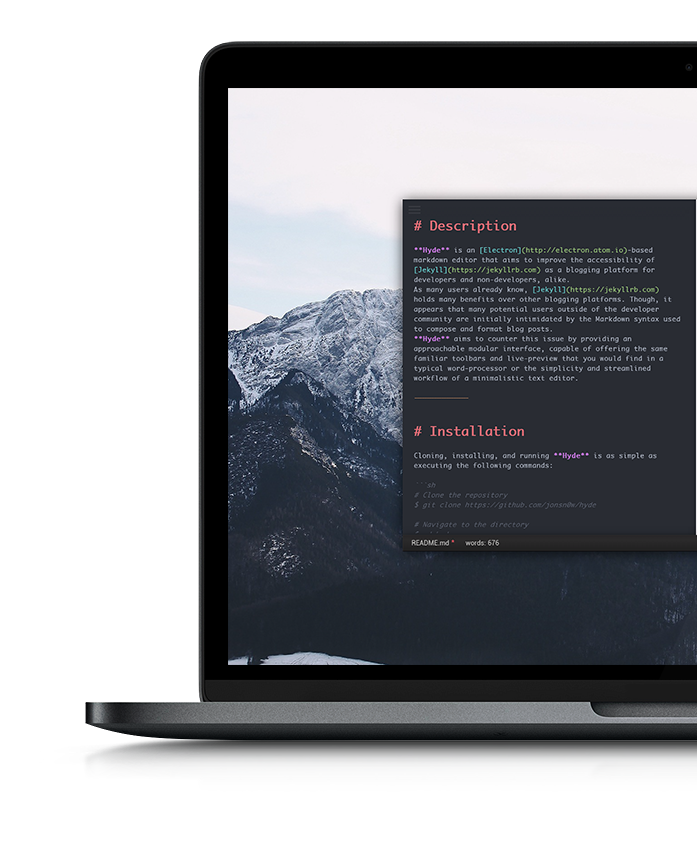
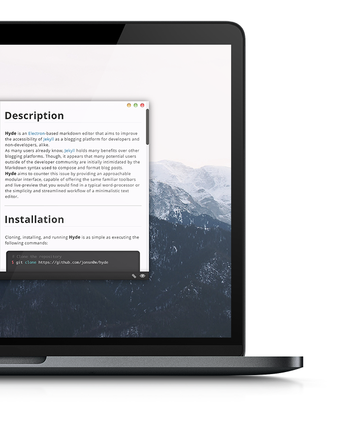

{% include title.html %}
- Easily format and enhance your writing with the dropdown toolbar
- Syntax highlighting for Markdown, YAML frontmatter, and compatible HTML
- A collection of 20+ syntax-themes to ensure you always feel at home
- Integrated spell-checking and word count
- Keyboard shortcut support for all app functionalities to streamline your workflow

- Live-preview allows you to see rendered changes in real-time
- Synced scrolling allows the preview to keep up with you as you type
- YAML frontmatter recognition for Jekyll blog posts
- Support for TeX math rendering
- FontAwesome, Glyphicon, and Emoji support
- Export your documents to a PDF or HTML for easy sharing across any platform

All contained within a modular UI, capable of providing a minimal editor or accessible word processor